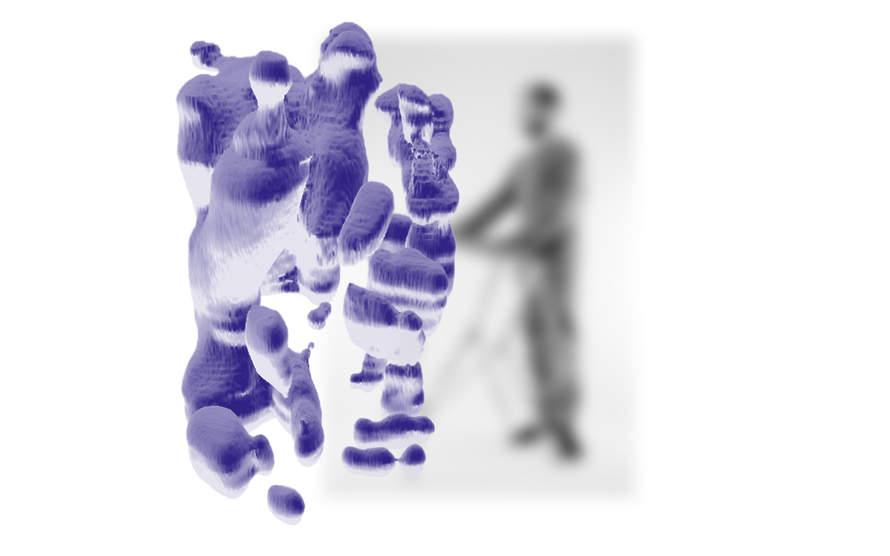
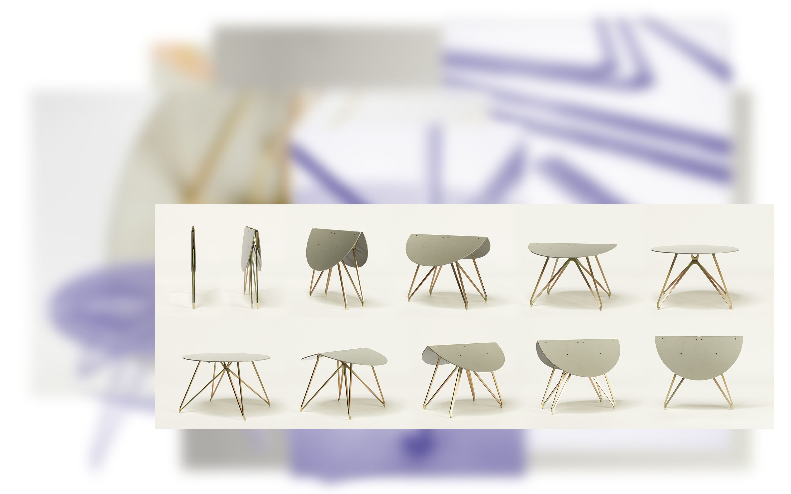

Matteo Bauer-Bornemann
Insta
matteo_bauer_bornemann
E-mail
matteo@bauer-bornemann.de
Phone
+49 17 640206387
© 2019 Design: Matteo Bauer-Bornemann; Graphics: Lena Windisch; Code: Jorim Theuns
Halo


Halo
Bei Halo handelt es sich um Varianten einer Leuchte, deren Lichtquelle sich im Fuß befindet. Durch eine Anordnung von Linsen wird das Licht gebündelt und nach oben abgestrahlt. An Gelenken befinden sich Spiegel, welche sich mittels einer Mechanik immer winkelhalbierend zu den Armen positionieren. Gemäß dem physikalischen Gesetz, demzufolge der Eintrittswinkel gleich dem Austrittswinkel ist, wird so das Licht in jeder Stellung von einem zum nächsten Spiegel reflektiert. Je nach Konstellation wird nicht immer das gesamte Licht eingefangen, sodass Projektionen in Form einer Aura im Raum entstehen. Das Licht ist hier als Material verstanden, welches geformt und bearbeitet wird. Als integraler Bestandteil des Objekts ordnet sich die Gestaltung diesem unter. Die daraus resultierenden Skulpturen sind visuell nur teilweise wahrnehmbar und werden letztlich imaginär vervollständigt.
Blubblub



Blubblub
Bei diesem Projekt handelt es sich um ein Gerät, welches eine Schnittstelle zwischen Mensch und Computer bilden soll. Mit ihm können durch Intuitive Eingabe virtuelle Körper erzeugt werden. Die Art der Eingabe orientiert sich dabei an handwerklichen Vorgehensweisen, ist also auf manueller Fertigkeit beruhend. Das Gerät nimmt ähnlich wie ein Touchscreen, allerdings wesentlich detaillierter die Berührungspunkte der Hand auf einer Fläche ab. Die Silhouetten der Abdrücke werden vom Rechner kontinuierlich übereinander geschichtet und anschließend zu einem dreidimensionalem Körper zusammen gesetzt. Das ganze geschieht beinahe in Echtzeit. Vom Benutzer soll der anfängliche Gebrauch keine speziellen Kenntnis erfordern. Der Erwerb weitere Fähigkeiten ergibt sich alleine aus dem Lernprozess, der aus der Anwendung resultiert, also kognitiv ist.
Knautsch


Younit


Younit
„Younit“ stellt einen experimentellen Ansatz zum Gebrauch ungenutzter Ressourcen dar. Exemplarisch handelt es sich bei der Umsetzung um Stühle, deren Einzelteile aus Resten, die beim Zuschnitt von Plattenmaterial entstehen, bezogen werden. Die Konstruktion der Stühle ist so angelegt, dass sie universell anwendbar ist und mit einem geringen Maß an Vorkenntnissen und Hilfsmitteln, selbstständig zu realisieren ist. Durch die Verwendung unterschiedlicher Materialien, entsteht eine unerschöpfliche Vielfalt an möglichen Variationen, was dazu führt, dass jedes Objekt eine ganz eigene Ästhetik aufweist. Diese zeichnet sich durch die extremen Kombinationen der verschiedenen Stoffe aus, welche mit den unterschiedlichsten und auch gegensätzlichsten Assoziationen belegt sind. Dies soll bewusst polarisieren und die qualitative und monetäre Wertschätzung, die an die verschiedenen Materialien geknüpft sind, in Frage stellen.
Sole




Sole
Bei Sole handelt es ich um einen Klapptisch der dank eines raffinierten Mechanismus mit nur einem Handgriff in Position gebracht werden kann. Das Besondere dabei ist, dass die Konstruktion keine zusätzliche Fixierung benötigt, da sie sich durch eine spezielle Geometrie selbst stabilisiert. Zusammengeklappt ist der Tisch gerade einmal 2,5 cm dünn und ergibt an die Wand gelehnt ein graphisches Abbild seiner selbst. Bis auf die lasergeschnittenen Bestandteile des Tisches, wurde bewusst auf komplizierte Herstellungsprozesse verzichtet, sodass „Sole“ mit gewöhnlichen Mitteln und gängigen Techniken, im Rahmen einer Manufaktur produziert werden kann.
123


123
Als Inspiration dienten klassische Minigolfbahnen die in ihrem gewohnten Terrain häufig mit einem eigenwilligen Charme bestechen. Diese formalen Qualitäten wurden in einen neuen Kontext gesetzt und auf das Type Design übertragen. Ziel war es Normvorstellungen in Bezug auf Schriftgestaltung zu überwinden und spannende dreidimensionale Objekte zu erzeugen. Die typografischen Minigolfbahnen sind interaktive Designobjekte die zur Teilnahme auffordern. Diese Form von Typografie im Raum ist als humorvoller, spielerischer Kommentar zur konventionellen Schriftgestaltung zu verstehen.


Nest


Nest
Auf ästhetische Weise zeigen die Gefäße die Ambivalenz zwischen einer scheinbar äußeren Gewalteinwirkung und der Funktion des Zusammenhalts. So steht die tatsächliche Wirkung der Keile im Widerspruch zu deren visuellen Eindruck. Diese berühren Wände und Boden lediglich über einige Kanten, verbinden und arretieren diese aber dadurch, sind somit unabdingbar für den Zusammenhalt der Gefäße. Dennoch vermitteln die Keile einen destruktiven Charakter, sie erzeugen tiefe Einschnitte auf den Oberflächen, durchdringen das gesamte Objekt und scheinen dessen Funktion zu sabotieren. Bedingt durch das Verfahren des Wasserstrahlschneidens, sind die Durchdringungen der sich diagonal kreuzenden Elemente rechtwinklig in das Material gearbeitet. Die daraus resultierenden Spalten werden so zum elementaren gestalterische Mittel.